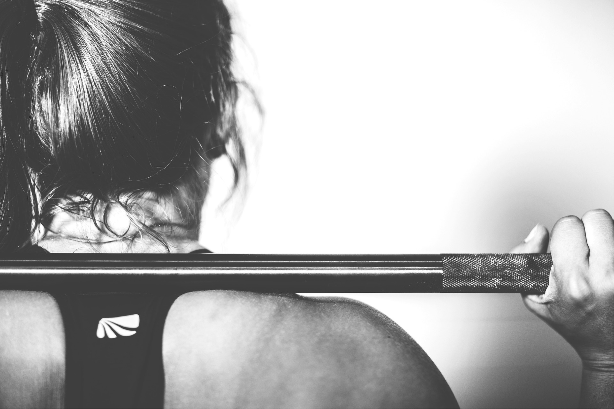

About Us
History
Queendom Co. was founded in 2020 by myself and my partner, and a littlehelp from our friend Mallory, right at the start of Covid. It was so hard
to sit at home doing nothing, so this became my sole focus in the
middle of the chaos. For years, I have struggled to find quality gym clothing
for women at a reasonable price. I would always complain to my boyfriend about
how guys have these really good quality and reasonably priced gym-wear,
but women are stuck with overpriced leggings that cost over $100.
New gym apparel brands pop up over night for guys, but not so much for women.
We got to talking about this problem with Mallory and Queendom started with just the three of us.
In the beginning we were only selling sports bras and leggings,
but in the past 3 years we have expanded quite a bit.
Now we are made up of over 50 employees in our two locations
and we have a product launch coming up at the end of June for our fall line.
We have evolved to an established company as opposed to Ben, Mallory, and I
sitting in our guest bedroom packaging our designs.
♥
Why Use Us?
Queendom Co. is a brand made by women for women.Queendom stands to create jobs for young people and educate the youth
in our communities. We want to compete with the brands that have
the most market share of the fitness industry. We aren't just a fitness wear company,
we are based out of Massachusetts, but have another location in Florida.
All of the big fitness brands are based out of California, on the West Coast,
but we are based and dominate the East Coast, which is our niche market.
We stand for fearlessness, strength, and innovation.
We know that the next generation is the future so we started an internship program
in the spring and fall where female students can shadow every aspect of the business
and potentially land a job here at Queendom. We want to empower the next
generation of businesswomen and female athletes to make a difference in their future.
